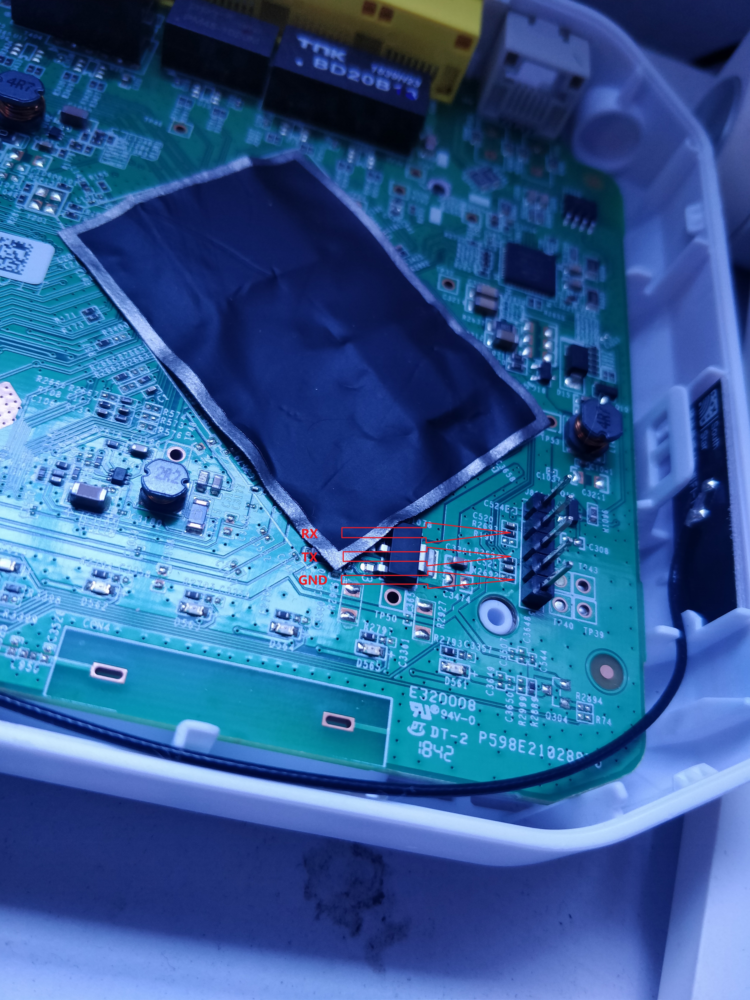

寒假回家，欣闻家中宽带升级成了 200M，然而坑爹的是一直以来的桥接模式被改成路由模式。由于想公网访问本地的 NAS，且想看看 IPV6 是否已在我家区域部署，所以想破解光猫获取管理员密码。
Google 该设备的型号，发现网上并没有相关的教程，可能是型号比较新的缘故。致电中国电信，被告知无法透露管理员密码，派人上门调试则需额外花费。本着自己折腾的原则，遂在某宝购入 CH340G USB转TTL板，准备拆机 TTL 破解光猫。
0x01 拆机
拆机后发现 PCB 板上有 TTL 插针，用万用表测得倒数第二根为 GND（接地pin），然后剩余四根随机组合，测得 RX（接收数据pin）和 TX（发送数据pin）。用杜邦线连接 USB转TTL板和 TTL 插针。

0x02 串口调试
电脑安装好 USB转TTL板的驱动，USB端连接上电脑。网上的教程一般使用 SecureCRT， 然而我后来发现 Xshell 也能连接串口，遂用 Xshell 进行调试。

如图设置参数，port 按照自己的情况设置。
然后连接。接通电源后等待。大概等待两分钟后，按回车，出现 Login: 字样，用 root/hg2x0 登陆。
用 cat /proc/cpuinfo 看一下 CPU 信息，居然是 MIPS...

超级密码在/flash/cfg/agentconf/factory.conf文件中。文件前两行即为管理员账户和密码。至此，光猫破解完成。